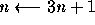
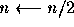

| The 3n + 1 problem |
Problems in Computer Science are often classified as belonging to a certain class of problems (e.g., NP, Unsolvable, Recursive). In this problem you will be analyzing a property of an algorithm whose classification is not known for all possible inputs.
Consider the following algorithm:
1. input n2. print n
3. if n = 1 then STOP
4. if n is odd then 
5. else 
6. GOTO 2
Given the input 22, the following sequence of numbers will be printed 22 11 34 17 52 26 13 40 20 10 5 16 8 4 2 1
It is conjectured that the algorithm above will terminate (when a 1 is printed) for any integral input value. Despite the simplicity of the algorithm, it is unknown whether this conjecture is true. It has been verified, however, for all integers n such that 0 < n < 1,000,000 (and, in fact, for many more numbers than this.)
Given an input n, it is possible to determine the number of numbers printed (including the 1). For a given n this is called the cycle-length of n. In the example above, the cycle length of 22 is 16.
For any two numbers i and j you are to determine the maximum cycle length over all numbers between i and j.
The input will consist of a series of pairs of integers i and j, one pair of integers per line. All integers will be less than 1,000,000 and greater than 0.
You should process all pairs of integers and for each pair determine the maximum cycle length over all integers between and including i and j.
You can assume that no operation overflows a 32-bit integer.
For each pair of input integers i and j you should output i, j, and the maximum cycle length for integers between and including i and j. These three numbers should be separated by at least one space with all three numbers on one line and with one line of output for each line of input. The integers i and j must appear in the output in the same order in which they appeared in the input and should be followed by the maximum cycle length (on the same line).
1 10 100 200 201 210 900 1000
1 10 20 100 200 125 201 210 89 900 1000 174